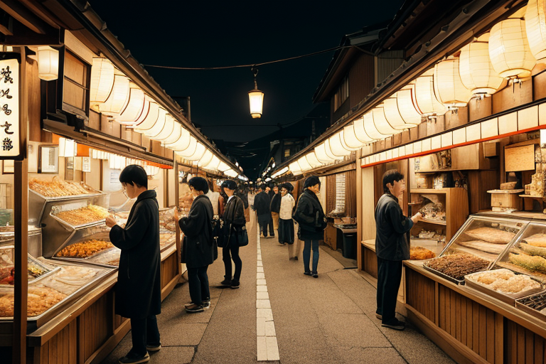
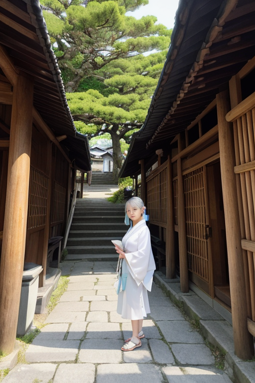
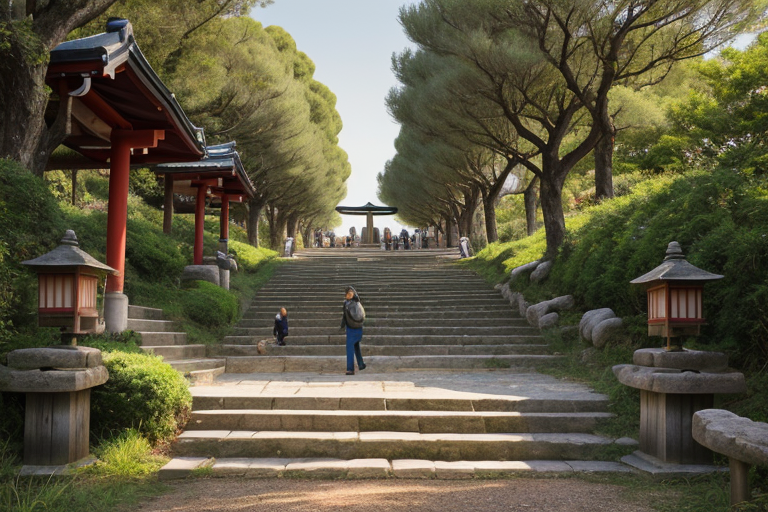
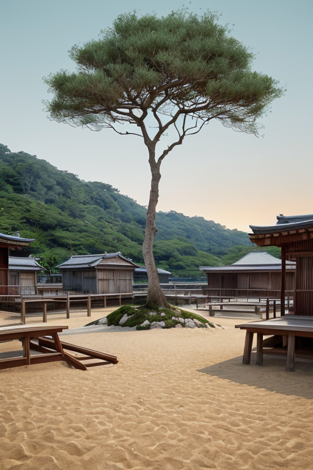
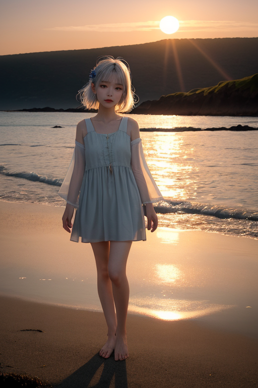

第一章 現実の香川
あなたはまだ気づいていない。この土地にも、王がいることを。
香川の昼下がり、高松のうどん屋の路地は活気に満ちていた。湯気が立ち昇る店先には列ができ、観光客の笑い声と、店主の威勢のいいかけ声が交錯する。金刀比羅宮への参道も、土産物屋の賑わいと共に人の流れが絶えない。ここは商都線、麺商圏。讃岐うどんという名の下に、人の欲望と金の流れが淀みなく循環している。それは確かな豊かさの形だった。
しかし、その活気の底には、微かな歪みが潜んでいた。過剰な期待の波、必要以上の喧噪、そして「もっと、もっと」という無言の圧力。それは土地そのものが持つ、小島と簡素を尊ぶ本質から、ほんの少しずれ始めている気配だった。
その歪みを、誰も気に留めない。ただ、白と青の簡素な紋章をまとったある存在だけが、淡々とそれを見つめていた。王は、列の最後尾で静かに待つ一人の客の姿を借り、過剰な熱気を少しだけ冷ます微調整を始める。風をほんの一瞬だけ変え、隣人の会話を一句だけ優しい方向へずらす。それは、豊かさの名の下に増殖する「無駄」を、最小限に削ぎ落とす作業である。

第二章 歪みの兆候
金刀比羅宮への石段は、今日も途切れることなく人々の足音で満ちていた。土産物屋の軒先には、次々と新しい「ご利益」商品が並ぶ。簡素王カガワリア・ミニマは、参道の片隅で盆栽の手入れをする老人の姿を借り、淡々とそれらを見つめていた。増え続ける選択肢。過剰な包装。本来の「参拝」という行為から、ほんの少しずつ重心がずれていく。それは、豊かさの追求が生む、質よりも量への傾斜という歪みだった。
彼の傍らでは、妖精ミニエルが無駄な熱気と雑音の波を静かに削ぎ落としていた。しかし、削れば削るほど、新たな「欲望」の波が押し寄せる。うどん屋の長い列の奥で、待ち時間を短縮するための追加メニューが次々に考案され、客の選択はより複雑になる。効率と豊かさの名の下に、簡素さは侵食されていた。
王はそっと手を動かした。風がほんの少し変わり、ある客が注文しようとした追加の天ぷらを、一枚だけ減らす思いがちらりとよぎる。それは救いではない。ほんのわずかな、調整の一瞬に過ぎない。

第三章 王の葛藤
金刀比羅宮の石段を、息を切らせながら登る観光客の群れ。彼らの多くは、頂上での写真と御朱印を「獲得」するために登る。王はその流れの脇に立ち、無数の小さな欲望の波を感じていた。時間を短縮したい、より多くの記念品を買いたい、次のスポットへ急ぎたい。それらは悪ではない。ただ、あまりに多く、速すぎる。
小豆島のオリーブ畑で、収穫を急ぐ農家の手の動きを、王は一瞬だけ緩やかに調整した。ほんの少し、風を変える。それは収量を増やすためではない。一つひとつの実を見る時間を、ごくわずかだけ取り戻すためだ。しかし、その調整の直後、農家はスマートフォンを取り出し、収穫効率を上げる新しいアプリを検索し始めた。
王は初めて、自らの内側に生じるもどかしさを認識した。削っても削っても、新たな欲望が湧き、複雑さが増殖する。簡素とは、ただ「少ない」状態ではない。では、何か。問いは、王自身の内側に深く刺さり、ゆっくりと回り始めた。

第四章 妖精との対話
直島の海岸で、王はウドニアに問うた。「なぜ、削っても増えるのか」。ウドニアは、醤油蔵の古い木樽を撫でるように答えた。「王よ。これは『商い』です。人は、『足りない』から動き、『もっと』を求める。この浜で、塩を、オリーブを、醤油を、売り買いしてきた。その流れそのものが、島の命です」
「では、簡素は無意味か」
「違います」とウドニアは、近くのアート作品、削ぎ落とされた鉄の塊を見つめた。「商いは『増やす』こと。でも、本当に価値あるものは、『削ぎ落として』初めて見える。讃岐うどんは、小麦と塩と水だけ。それでいて、打つ人の技と、食べる人の時間が、一杯に凝縮される。少ない素材が、かえって豊かな『間』を生むのです」
王は黙った。人の欲望は増殖する波だ。だが、その波間には、確かに、無駄を削ぎ落とした時にだけ広がる深い静寂がある。盆栽の一針、和三盆糖の一息、うどんを啜る一瞬。それらは、増やす営みの中に埋もれながら、削ぎ落とすことで輝く、小さな豊かさの島々だった。

第五章「微調整と余韻」
父母ヶ浜の夕景を求める人々の群れが、三脚を立てる場所を探していた。潮が引き、水面が鏡となるその一瞬を、誰もが写真に収めようと押し寄せる。混雑は必然で、ぶつかり合う三脚、遮り合う視線。歪みは、この熱気そのものの中にあった。
カガワリア・ミニマは、人々の足元の砂を微かに固め、わずかに滑りにくくした。隣り合う二人の三脚の位置を、五センチずらす風を起こした。それは、誰かが転ぶかもしれない偶然を、誰もが少しだけ余裕を持って景色を共有できる偶然へと、目に見えないレベルで調整する作業だ。妖精たちは、無駄な軋轢の波紋を、発生する前にそっと削いでいく。
王は思う。豊かさとは、増やすことではない。この混雑の中でも、隣人と共に夕陽を眺める一瞬の「間」を、どれだけ確保できるか。削ぎ落とされた余白にこそ、本当の豊かさは宿る。彼は感情を理解し始めていた。この調整は、無駄を嫌うからではない。ここに集う人々の、ほんの少しの幸福のためだと。
鏡のような海に沈む太陽を、誰もが邪魔されずにカメラに収めた。誰も王の働きに気づかない。ただ、何故か今日はすっと写真が撮れた、という満足感だけが、人々の胸に残った。
あなたの町にも、王がいる。